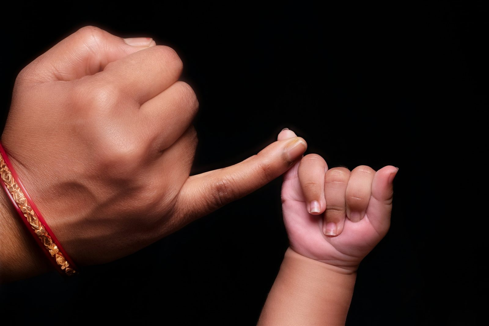
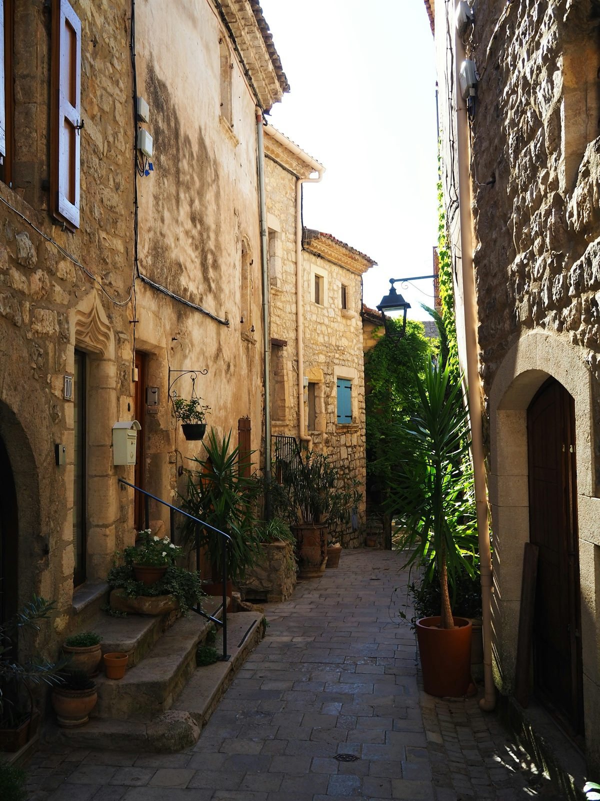
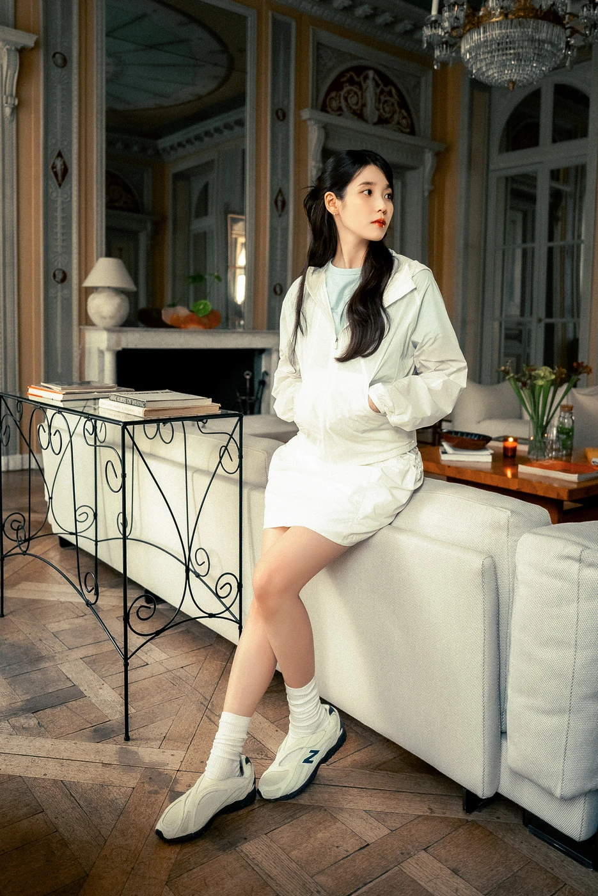
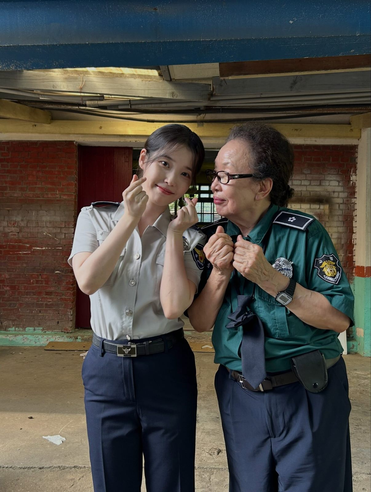
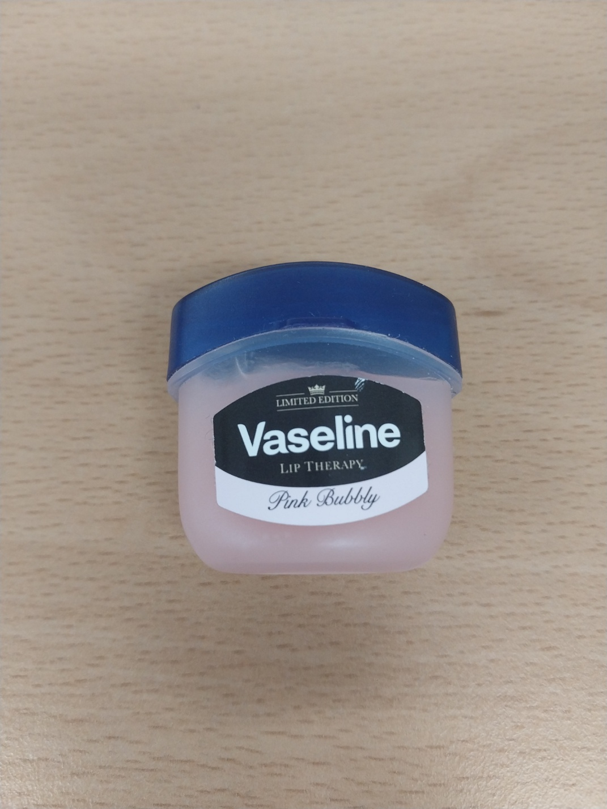

별이 쏟아지는 탁 트인 밤하늘


건물에 가리지 않고 탁 트인 밤하늘에 별이 많이 보여서 골랐다.

나는 소란하지 않고 조용히 머무는 순간을 고른다
별이 쏟아지는 탁 트인 밤하늘
건물에 가리지 않고 탁 트인 밤하늘에 별이 많이 보여서 골랐다.
가족과 함께 맞잡은 손



혼자가 아니라 누군가와 함께 쉬고 있는 손이어서 골랐다.
매일 걷던 텅 빈 길




사람 없이 비어 있고 매일 걷는 길 같아서 골랐다.
나는 좋아하는 마음을 노래와 행동으로 보여 주는 사람에게 끌린다
뉴발란스 캠페인 사진에서 흰 재킷과 치마를 입고 창밖을 바라보는 모습

비주얼이 예쁘고 귀엽다
「Dear my crazy soulmate」 뮤직비디오에 김영옥·나문희 배우가 나와 평생 가는 우정을 보여 준다

노래에 본인이 전하고 싶은 뜻을 전달한다
데뷔기념일에 네 곳에 5천만 원씩, 모두 2억 원을 기부했다
남들에게 선한 영향력을 준다
호숫가를 걸으며 산책을 한다

선선한 바람과 따뜻한 햇빛을 받을 때 바람과 햇빛을 보며 마음이 잔잔해져서
밀려오는 파도를 바라보며 모래사장을 걷는다


파도 소리가 크게 들리는 바람 부는 날 바람과 파도 소리가 마음을 시원하게 해서
하늘과 땅이 만나는 선을 바라본다


바닥에 하늘이 그대로 비치는 맑은 날 하늘 한가운데 서 있는 것 같아서
밖에 나가기 전에 입술에 바른다.

색이 진하지 않고 입술에 자연스럽게 묻어서
입술이 건조할 때마다 사용한다

특별한 향이나 색조 없이 입술을 촉촉하게 해서
입이 심심하거나 상쾌한걸 먹고 싶을때

복숭아 향이 은은하게 나서
손이 건조할 때

향이 부담스럽지 않고 냄새가 좋아서
입술이 건조할 때

립밤에 은은한 향과 색조가 있어서